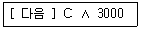
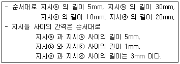
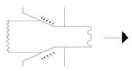

자기비파괴검사기능사 (2015-01-25 기출문제)
1과목: 자기탐상시험법
1. 침투탐상검사에서 과잉침투액을 제거한 후 시험체를 가열하여 침투액을 팽창시킴으로써 결함지시모양을 형성시키는 방법은?
- 가열현상법
- 팽창현상법
- 무현상법
- 가압현상법
(정답률: 67%)

2. 다른 비파괴검사법과 비교하여 와전류탐상시험의 특징이 아닌 것은?
- 시험을 자동화할 수 있다.
- 비접촉 방법으로 할 수 있다.
- 시험체의 도금두께 측정이 가능하다.
- 형상이 복잡한 것도 쉽게 검사할 수 있다.
(정답률: 67%)
3. 비파괴검사의 목적에 대한 설명과 거리가 먼 것은?
- 결함이 존재하지 않는 완벽한 제품을 생산한다.
- 제품의 결함 유무 또는 결함의 정도를 파악, 신뢰성을 향상시킨다.
- 시험결과를 분석, 검토하여 제조 조건을 보완하므로 제조기술을 발전시킬 수 있다.
- 적절한 시기에 불량품을 조기 발견하여 수리 또는 교체를 통해 제조 원가를 절감한다.
(정답률: 82%)
4. 특성 X-선에 관해 설명한 것 중 틀린 것은?
- 재료의 물성분석에 이용된다.
- 단일 에너지를 가진다.
- 파장은 관전압이 바뀌어도 변하지 않는다.
- 연속 스펙트럼을 가진다.
(정답률: 62%)
5. 와전류 탐상시험 기기에서 게인(Gain) 조정 장치의 역할로 옳은 것은?
- 위상(phase) 조절
- 평형(balance) 조정
- 감도(sensitivity) 조정
- 진동수(frequency) 조정
(정답률: 66%)
6. 누설검사에 사용되는 가압 기체가 아닌 것은?
- 헬륨
- 질소
- 포스겐
- 공기
(정답률: 71%)
7. 다음 중 비금속 물질의 표면 불연속을 비파괴검사할 때 가장 적합한 시험법은?
- 자분탐상시험법
- 초음파탐상시험법
- 침투탐상시험법
- 중성자투과시험법
(정답률: 82%)
8. 음향방출검사시 계측순서 중 계측감도의 교정 항목이 아닌것은?
- 변환자
- 변환자를 접착한 상태
- 피검체의 음속감소
- 문턱값
(정답률: 72%)
9. 초음파탐상 시험방법에 속하지 않는 것은?
- 공진법
- 외삽법
- 투과법
- 펄스반사법
(정답률: 81%)
10. 기포누설시험을 할 때 감도를 저해하는 요소로 가장 거리가 먼 것은?
- 표면오염물
- 부적절한 점도
- 빠른 누설
- 과도한 진공
(정답률: 70%)
11. 자분탐상시험에서 시험체 외부의 도체로 통전함으로써 자계를 주는 방법은?
- 전류관통법
- 극간법
- 자속관통법
- 축통전법
(정답률: 31%)
12. 일반적으로 오스트나이트계 트레인리스강 용접부 검사에서 적용이 불가능한 시험방법은?
- 방사선투과시험
- 자분탐상시험
- 누설탐상시험
- 초음파탐상시험
(정답률: 69%)
13. 강자성체 및 비자성 재료에서도 균열의 깊이 정보를 알 수 있는 비파괴 검사 방법은?
- 와전류 탐상검사
- 자분탐상검사
- 자기기록탐상검사
- 침투탐상검사
(정답률: 64%)
14. 자분탐상검사에서 자화 방법을 선택할 때 고려해야 할 사항과 거리가 먼 것은?
- 검사 환경
- 검사원의 기량
- 시험체의 크기
- 예측되는 결함의 방향
(정답률: 69%)
15. 자분탐상시험에서 다음 중 의사지시모양으로 분류된 것이 아닌 것은?
- 자기펜 자국
- 단면 급변지시
- 재질 경계지시
- 희미한 자분지시
(정답률: 62%)
16. 자장의 세기와 자속밀도 사진의 관계식으로 다음 중 맞는 것은?(단, B: 자속밀도, μ: 투자율, H: 자자의 세기 이다.)
- B = μ × H
- B = H
- B = μ/H
- B = 1/H
(정답률: 84%)
17. 자분탐상시험에서 형광자분을 사용하는 이유로 옳은 것은?
- 자외선등을 사용하지 않게 하기 위하여
- 검사용액을 교환하는 시기를 길게 하기 위하여
- 염색자분보다 정밀한 검사를 하기 위하여
- 형광자분을 밝은 곳에서 사용이 편리하므로
(정답률: 83%)
18. 제품에 대한 자분탐상시험 중 탐상기의 고장이 발견 되었을 때 이의 대처 방법으로 가장 적합한 것은?
- 탐상기를 교정 검사한 날짜 이후의 모든 제품을 재검사한다.
- 탐상기의 고장이 발생한 시점을 추정하여 이후를 재건사 한다.
- 탐상기로 측정된 것 중 합격된 것만 재검사한다.
- 탐상기로 측정된 것 중 불합격된 것만 재검사한다.
(정답률: 69%)
19. 자화장치의 전기아크 발생원인에 대한 설명으로 가장 관계가 먼 것은?
- 과도한 자화전류 및 자화장치의 Head 와의 접촉 불량
- 자화장비를 예열시키지 않고 사용했을 때
- 프로드와 시험체의 접촉불량 또는 프로드가 미끄러졌을 때
- 아크용접 장비와 같은 전원으로 전류를 끌어 사용했을 때
(정답률: 64%)
20. 다음 중 자분탐상시험 후 탈자에 일반적으로 사용하는 전류는?
- 교류
- 직류
- 반파직류
- 충격전류
(정답률: 63%)
2과목: 자기탐상관련규격
21. 자화된 시험체에 자분을 적용했을 때 강자성체와의 접촉으로 인해 지시모양은 무슨 지시인가?
- 자기펜흔적
- 자극지시
- 전류지시
- 전극지시
(정답률: 69%)
22. 용접부의 검사시 개선면과 용접완료면의 결함 검출을 위해 흔히 사용되는 자화방법은?
- 코일법
- 극간법
- 전류관통법
- 자속관통법
(정답률: 74%)
23. 직선도선에 흐르는 전류 값이 120A일 때 도체의 중심에서 반경 20cm인 곳에서의 자계의 세기는 얼마인가?
- 1.2 Oe
- 1.2 A/m
- 0.478 A/m
- 0.478 Oe
(정답률: 53%)
24. 환상의 도체에 바퀴모양으로 균일하게 도선을 감은 원형코일에 아래의 [조건]으로 자화했을 때 이 환상코일 내부의 도체에 흐르는 자계의 세기는? (단, 코일 축이 만드는 원의 반지름:10cm, 도선 감은수: 10회, 환상코일에 흐르는 전류: 100A 이다.)
- 1.59 A/m
- 15.91 A/m
- 159.15 A/m
- 1591.55 A/m
(정답률: 43%)
25. 원형자화법에 의하여 자화된 부품을 탈자할 때 첫 단계로 무엇을 해야 하는가?
- 직접 탈자해야 한다.
- 부품 내에 전류자장을 형성해야 한다
- 부품 내에 종축자장을 형성해야 한다.
- 부품 내에 회전자장을 형성해야 한다.
(정답률: 41%)
26. 다음 중 자분탐상시험의 3가지 기본탐상 순서로 옳게 나열된 것은?
- 관찰 → 자분적용 → 탈자
- 탈자 → 자분적용 → 관찰
- 자화 → 자분적용 → 관찰
- 자화 → 세척처리 → 관찰
(정답률: 87%)
27. 강관에 대한 누설자속탐상시 축방향의 결함을 검출하기 위한 가장 적잘한 자화 방법은?
- 극간법으로, 원주방향으로 자화
- 코일법으로, 원주방향으로 자화
- 극간법으로, 축방향으로 자화
- 코일법으로, 축방향으로 자화
(정답률: 46%)
28. 철강 재료의 자분탐상 시험방법 및 자분모양의 분류 (KS D0213)에 따라 3개의 선형지시가 1mm 간격으로 일직선상에서 검출되었고 검출된 지시의 길이는 10mm 로 동일했다면 지시의 길이는 어떻게 해석하여야 하는가?
- 10mm
- 12mm
- 연속한 지시이므로 32mm
- 연속한 지시이므로 33mm
(정답률: 73%)
29. 철강 재료의 자분탐상 시험방법 및 자분모양의 분류(KS D0213)에서 시험기록의 기호 표시가 다음과 같을 때 ∧ 의 의미는?

- 충격전류
- 교류전류
- 직류전류
- 맥류전류
(정답률: 71%)
30. 철강 재료의 자분탐상 시험방법 및 자분모양의 분류 (KS D0213)에 따른 C형 표준 시험편에 관한 사항으로 틀린 것은?
- B형 대비 시험편의 적용이 곤란한 경우 대신 사용한다.
- C1형과 C2형으로 나눈다.
- 인공 홈이 있는 면이 시험면에 잘 밀착되도록 붙인다.
- 자분의 적용은 연속법으로 한다.
(정답률: 70%)
31. 철강 재료의 자분탐상 시험방법 및 자분모양의 분류(KS D0213)에서 자분은 ( )에 따라 적당한 자성, 입도, 분산성 및 색조를 갗추어야 한다, ( )에 적합하지 않은 것은?
- 흠의성질
- 시험체의 위치
- 시험체의 표면상태
- 시험체의 재질
(정답률: 58%)
32. 철강 재료의 자분탐상 시험방법 및 자분모양의 분류(KS D0213)에서 전류계, 타이머 및 자외선 조사장치의 최소 점검사주기로 바른 것은?
- 3개월
- 6개월
- 1년
- 2년
(정답률: 64%)
33. 압력 용기-바파괴 시험 일반(KS B 6752)에서 직접 통전법의 경우 사용할 수 없는 자화전류는?
- 직류
- 교류
- 반파정류
- 전파정류
(정답률: 41%)
34. 철강 재료의 자분탐상 시험방법 및 자분모양의 분류(KS D0213)에서 정하는 탐상 유효범위는
- 1회의 자분 적용 조작 범위에 의해 결함 자분 모양이 형성되고 관찰 조작으로 확실히 식별되는 범위
- 1회의 자분 적용 조작 범위에 의해 결함 자분모양이 형성되나 일반 관찰 조작으로는 확실히 식별되지 않는 범위
- 2회의 자분 적용 조작 범위에 의해 결함 자분 모양이 형성되고 관찰 조작으로 확실히 식별되는 범위
- 2회의 자분 적용 조작 범위에 의해 결함 자분 모양이 형성되는 범위나 일반 관찰 조작으로는 확실히 식별되지 않는 범위
(정답률: 61%)
35. 철강 재료의 자분탐상 시험방법 및 자분모양의 분류(KS D0213)에 의한 자분모양은 어떤 내용에 따라 분류하는가?
- 자분의 수량
- 모양 및 집중성
- 자분모양의 깊이와 폭
- 자화방법과 자분의 농도
(정답률: 68%)
36. 철강 재료의 자분탐상 시험방법 및 자분모양의 분류(KS D0213)에서 자화방법과 분류기호의 연결이 옳지 않는 것은?
- 직각통전법 : ER
- 전류관통법 : I
- 극간법 : M
- 축통전법 : EA
(정답률: 70%)
37. 철강 재료의 자분탐상 시험방법 및 자분모양의 분류(KS D0213) 에 따른 자분의 자성을 측정하는 방법에 해당되지않는 것은?
- 자기천칭을 사용하는 방법
- 말굽자석에 붙은 자분의 깊이를 측정하는 방법
- 솔레노이드 코일을 사용하는 방법
- 자기히스테리시스 곡선을 구하는 방법
(정답률: 65%)
38. 철강 재료의 자분탐상 시험방법 및 자분모양의 분류(KS D0213)에서 시험기록을 작성할 때 시험체에 대하여 기재하여야 하는 사항이 아닌 것은?
- 치수
- 품명
- 제조자명
- 표면상태
(정답률: 74%)
39. 철강 재료의 자분탐상 시험방법 및 자분모양의 분류(KS D0213)에 따라 동일 직선상에 길이가 다른 4개의 선상자분 모양이 다음과 같이 검출되었다. 옳게 분류된 것은?

- 지시 ⓑ,ⓒ,ⓓ는 연속한 자분모양이며, 그 길이는 60mm이다.
- 지시 ⓑ,ⓒ,ⓓ는 연속한 자분모양이며, 그 길이는 64mm이다.
- 지시 ⓐ과 ⓓ 는 독립된 자분모양이며, 결함 ⓑ와 ⓒ은 연속한 자분모양으로 그 길이는 40mm 이다.
- 지시 ⓐ과 ⓓ 는 독립된 자분모양이며, 결함 ⓑ와 ⓒ은 연속한 자분모양으로 그 길이는 41mm 이다.
(정답률: 68%)
40. 철강 재료의 자분탐상 시험방법 및 자분모양의 분류(KS D0213)에 따라서 연속법으로 검사할 때, 다음 시험체 중 탐상에 필요한 자계강도가 가장 높게 요구되는 시험체는 무엇인가?
- 일반적 구조물
- 일반적 용접부
- 주단조품
- 퀜칭한 기계부품
(정답률: 69%)
3과목: 금속재료일반 및 용접일반
41. 철강 재료의 자분탐상 시험방법 및 자분모양의 분류(KS D0213)에 따른 전처리에 관한 사항으로 맞는 것은?
- 전처리 범위는 용접부의 경우 시험범위에서 모재측으로 약 20mm 넓게 잡는다.
- 시험체는 원칙적으로 조립된 최종 상태에서 검사한다.
- 시험정밀도와 관련 없이 도금 층은 제거하지 않도록 조심 한다.
- 기름구멍 등에 자분이 잘 들어가도록 깨끗이 닦아 놓아야 한다.
(정답률: 65%)
42. 철강 재료의 자분탐상 시험방법 및 자분모양의 분류(KS D0213)에서 시험 기록에 기본적으로 포함할 사항이 아닌 것은?
- 시험 장치 및 자분 모양
- 자화 전압
- 자화 전류의 종류
- 표준시험편
(정답률: 46%)
43. 용융금속을 주형에 주입할 때 응고하는 과정을 설명한 것으로 틀린 것은?
- 나뭇가지 모양으로 응고하는 것을 수지상정이라 한다.
- 핵 생성 속도가 핵 성장 속도보다 빠르면 입자가 미세해진다.
- 주형에 접한 부분이 빠른 속도로 응고하고 차차 내부로 가면서 천천히 응고한다.
- 주상 결정 입자 조직이 생성된 주물에서는 주상결정 입내 부분에 불순물이 집중하므로 메짐이 생긴다.
(정답률: 56%)
44. 4%Cu, 2%Ni 및 1.5%Mg 이 첨가된 알루미늄 합금으로 내연기관용 피스톤이나 실린더 헤드 등에 사용되는 재료는?
- Y합금
- 라우탈(lautal)
- 알클래드(alclad)
- 하이드로날륨(hydronalium)
(정답률: 76%)
45. 구리 및 구리 합금에 대한 설명으로 옳은 것은?
- 구리는 자성체이다
- 금속 중에 Fe 다음으로 열전도율이 높다.
- 황동은 주로 구리와 주석으로 된 합금이다.
- 구리는 이산화탄소가 포함되어 있는 공기 중에서 녹청색 녹이 발생한다.
(정답률: 55%)
46. Y합금의 일종으로 Ti 과 Cu를 0.2% 정도씩 첨가한 합금으로 피스톤에 사용되는 합금의 명칭은?
- 라우탈
- 엘린바
- 문쯔메탈
- 코비탈륨
(정답률: 55%)
47. 다음 중 비중(specific gravity)이 가장 작은 금속은?
- Mg
- Cr
- Mn
- Pb
(정답률: 76%)
48. 특수강에서 다음 금속이 미치는 영향으로 틀린 것은?
- Si : 전자기적 성질을 개선한다.
- Cr : 내마멸성을 증가시킨다.
- Mo : 뜨임메짐을 방지한다.
- Ni : 탄화물을 만든다.
(정답률: 55%)
49. 공석강의 탄소함유량은 약 얼마인가?
- 0.15%
- 0.8%
- 2.0%
- 4.3%
(정답률: 63%)
50. 제진 재료에 대한 설명으로 틀린 것은?
- 제진 합금으로는 Mg-Zr, Mn-Cu 등이 있다.
- 제진 합금에서 제진 기구는 마텐자이트 변태와 같다.
- 제진 재료는 진동을 제어하기 위하여 사용되는 재료이다.
- 제진 합금이란 큰 의미에서 두드려도 소리가 나지 않는 합금이다.
(정답률: 59%)
51. 저용융점 합금의 용융 온도는 약 몇 ℃ 이하 인가?
- 250℃ 이하
- 450℃ 이하
- 550℃ 이하
- 650℃ 이하
(정답률: 71%)
52. 금속의 결정구조를 생각할 때 결정면과 방향을 규정하는 것과 관련이 가장 깊은 것은?
- 밀러지수
- 탄성계수
- 가공지수
- 전이계수
(정답률: 63%)
53. 기체 급랭법의 일종으로 금속을 기체 상태로 한 후에 급랭 하는 방법으로 제조되는 합금으로써 대표적인 방법은 진공 증착법이나 스퍼터링법 등이 있다. 이러한 방법으로 제조되는 합금은?
- 제진 합금
- 초전도 합금
- 비정질 합금
- 형상 기억 합금
(정답률: 58%)
54. 그림과 같은 소성가공법은?

- 압연가공
- 단조가공
- 인발가공
- 전조가공
(정답률: 67%)
55. 오스테나이트계 스테인리스강에 첨가되는 주성분으로 옳은 것은?
- Pb – Mg
- Cu – Al
- Cr – Ni
- P – Sn
(정답률: 67%)
56. 다음 비철금속 중 구리가 포함되어 있는 합금이 아닌 것은?
- 황동
- 톰백
- 청동
- 하이드로날륨
(정답률: 70%)
57. 다음 철강 재료에서 인성이 가장 낮은 것은?
- 회주철
- 탄소공구강
- 합금공구강
- 고속도공구강
(정답률: 66%)
58. 다음 중 두께가 3.2mm인 연강 판을 산소⦁아세틸렌가스 용접할 때 사용하는 용접봉의 지름은 얼마인가?
- 1.0mm
- 1.6mm
- 2.0mm
- 2.6mm
(정답률: 59%)
59. 부하전류가 증가하면 단자 전압이 저하하는 특성으로서 피복아크 용접 등 수동 용접에서 사용하는 전원특성은?
- 정전압특성
- 수하특성
- 부하특성
- 상승특성
(정답률: 42%)
60. 다음 중 압접의 종류에 속하지 않는 것은?
- 저항 용접
- 초음파 용접
- 마찰 용접
- 스터드 용접
(정답률: 55%)